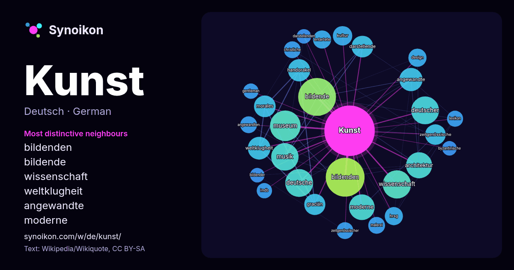

Deutsch · beliebtes Wort
Kunst
“art” · Die Wörter in seinem Umfeld aus 1423 Vorkommen in Wikipedia, Wikiquote.

Typischste Nachbarn
- bildenden 59×
- bildende 58×
- wissenschaft 28×
- weltklugheit 23×
- angewandte 22×
- moderne 22×
- handorakel 22×
- architektur 22×
- museum 22×
- darstellende 20×
- gracián 20×
- morales 20×
- zeitgenössische 17×
- musik 16×
- entartete 15×
- hrsg 15×
- angewandten 13×
- design 13×
- zeitgenössischer 12×
- christliche 12×
× = wie viel häufiger als in allgemeinem Wikipedia-Text.
Häufigste Nachbarn
- bildenden 64
- bildende 61
- museum 40
- wissenschaft 34
- deutsche 33
- deutscher 33
- musik 32
- architektur 29
- moderne 28
- angewandte 23
- weltklugheit 22
- handorakel 21
- darstellende 20
- morales 20
- gracián 19
- art 18
- münchen 18
- zeitgenössische 18
- jahrhunderts 17
- leben 17
Im Kontext
- nicht mehr. Kunst ist ein deutsches Wort. Bereits im Althochdeutschen lautete es kunst (Plural kunsti), im Mittelhochdeutschen kunst (Pl. künste). Ursprünglich Wikipedia snippets · Kunst
- Der Begriff bildende Kunst (manchmal auch Bildende Kunst) hat sich seit dem frühen 19. Jahrhundert im deutschen Sprachraum als Sammelbegriff für die visuell Wikipedia snippets · Bildende Kunst
- Ist das Kunst oder kann das weg? ist eine humoristische Redewendung, die die Erkennbarkeit und Wertschätzung von einigen Werken moderner Kunst in Frage Wikipedia snippets · Ist das Kunst oder kann das weg?
- Begründungen diffamierte moderne Kunst. Der Begriff Entartung wurde Ende des 19. Jahrhunderts von der Medizin auf die Kunst übertragen und meint damit degeneriert Wikipedia snippets · Entartete Kunst
- Abstrakte Kunst, genannt auch ungegenständliche Kunst, ist eine Sammelbezeichnung für nach 1900 in Erscheinung tretende Kunstrichtungen des 20. Jahrhunderts Wikipedia snippets · Abstrakte Kunst
- der Deutschen Kunst errichtet. Das Haus, ohne eigene Sammlung, organisiert und zeigt Ausstellungen zeitgenössischer und moderner Kunst. Es gehört dem Wikipedia snippets · Haus der Kunst
- Bildende Kunst, Schauspiel und Design. Die UdK gliedert sich in die vier Fakultäten Bildende Kunst, Gestaltung, Musik und Darstellende Kunst. Sie betreibt Wikipedia snippets · Universität der Künste Berlin
- verwendet wie z. B. Digitale Kunst (s. a. Digitale Medien), Videokunst, Computerkunst, Roboterkunst oder elektronische Kunst. Bei den letztgenannten Beispielen Wikipedia snippets · Medienkunst
Weitere Wörter
- Arbeit
- Brücke
- Essen
- Familie
- Geld
- Geschichte
- Gesundheit
- Gold
- Gott
- Leben
- Macht
- Natur
- Tod
- Wahrheit
- Wasser
- Wissenschaft
- Zug
Vorberechnet am 2026-10-09 mit Standardeinstellungen (±5 Wörter, mittlerer Korpus). Die interaktive Karte kann mit Live-Daten aktualisieren.
Maschinell übersetzte Oberfläche; Korrekturen willkommen.